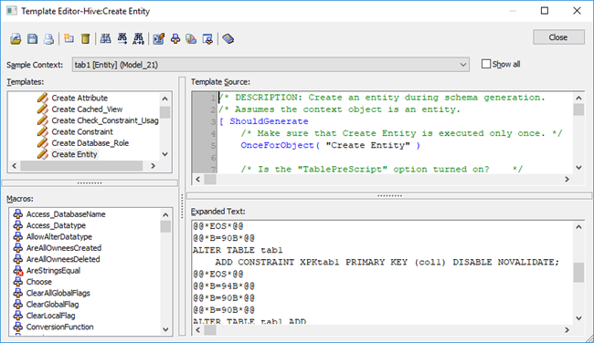

The Template Editor is shown in the following illustration:

The following list describes the tools and controls available in the Template Editor:
Opens a different template file.
Saves the template file or lets you make a copy of the file.
Prints the selected template.
Inserts a new template into the template file.
Marks or unmarks the selected template for deletion and deletes the template at the time of saving the template file.
Searches for text in the template.
Repeats your last search in the template.
Replaces text in the template.
Toggles auto-indenting in the template.
Toggles sorting of macros by categories.
Invokes the Template Editor Preferences dialog.
Invokes the Macro Categories dialog.
Launches the online help.
Allows you to select the starting object that will be used for the expansion of the template. By default, the editor attempts to select an Entity object when it is invoked. For each object listed, it shows the name of the object, its type, and a string representing its ownership chain in the model to allow objects with the same name to be distinguished from each other.
Consult the Template Language and Macro Reference document to ensure you have a basic understanding of the context stack.
Since a large model might have sufficient objects to exceed Windows' limits for a combo box, only three objects of each type in the model are added to the list. If you want to see all objects in your model, select the Show All check box.
Shows all templates found in the template file. They are categorized based on their names as follows: Create, Alter, Drop, and Insert templates; Clause templates (reusable fragments employed by other templates); and Miscellaneous templates. Double-click a template to edit it. By default, when the Template Editor is invoked, it attempts to select the Create Entity template.
Shows the macros supported in TLX. By default, they are listed alphabetically. You can toggle the display to show them grouped by categories. You can create new categories and add macros to them using the Macro Categories dialog. The icon next to the macro indicates its deprecation status. You can learn about the various deprecation levels in the Template Language and Macro Reference document, and suppress the display of deprecated macros using the Template Editor Preferences dialog. Double-click a macro to insert it into the template at the current location.
Shows the TLX code of the template. It is syntax-colored, but you can change the color choices in the Template Editor Preferences dialog.
Shows the result of expanding the template against the current context object. Alternatively, it may show error information if a mistake is made in editing the template. It is syntax-colored, but you can change the color choices in the Template Editor Preferences dialog.